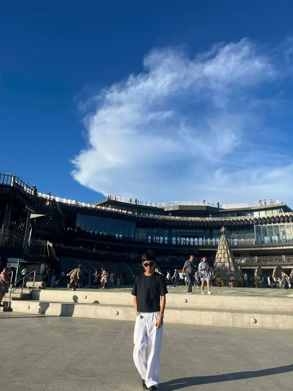

ICT Student
Personal Information

My name is Bernardo Jamili C.
I am a Grade 11 ICT student.
My birthday is on January 13.
This image represents me as a learner and future programmer.
Welcome to my multimedia profile website! Here you can learn more about me, my hobbies, my goals, my favorite things, and how to contact me.

What You Can Find Here
- About Me
- My Hobbies
- My Goals
- My Favorite Things
- My Contact Information
Explore My Website
You can visit the different pages of my website below: